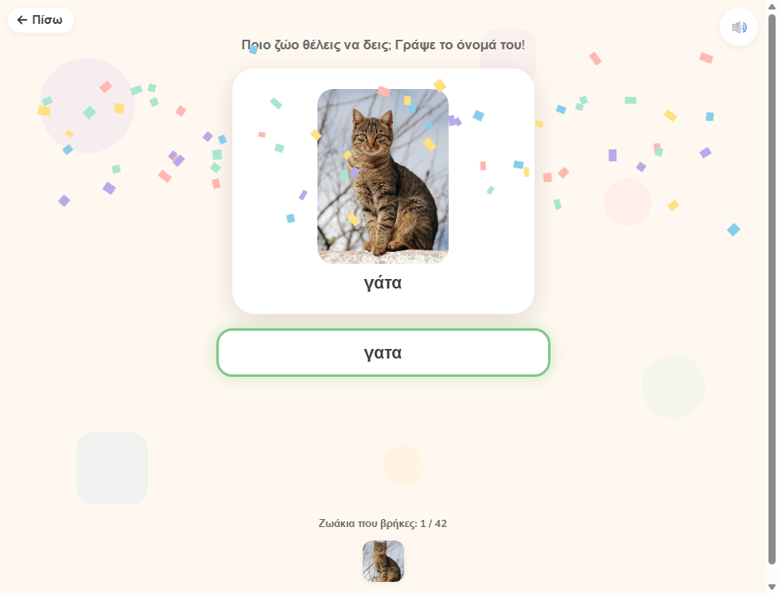

Λειτουργικός Λόγος

▶ ΠαίξεΤα Ζωάκια
Μαθαίνω να ζητώ – Ζώα
Ένα εκπαιδευτικό παιχνίδι σχεδιασμένο για παιδιά που επικοινωνούν μέσω πληκτρολόγησης, με ιδιαίτερη έμφαση σε μη λεκτικά παιδιά στο φάσμα του αυτισμού.
Το παιχνίδι αξιοποιεί το ενδιαφέρον για τα ζώα ως κίνητρο και οδηγεί το παιδί σταδιακά από την απλή αναγνώριση και πληκτρολόγηση μιας λέξης στη δημιουργία μιας λειτουργικής φράσης αιτήματος.
Η δραστηριότητα εξελίσσεται σε τρία επίπεδα αυξανόμενης δυσκολίας:
1ο επίπεδο – Γράφω το ζώο
Το παιδί πληκτρολογεί το όνομα ενός ζώου και βλέπει την αντίστοιχη εικόνα. Έτσι συνδέει τη γραπτή λέξη με το νόημά της και εξοικειώνεται με τη χρήση του πληκτρολογίου.
2ο επίπεδο – Μαθαίνω να ζητώ
Το παιδί χρησιμοποιεί το έτοιμο κουμπί «Θέλω» και στη συνέχεια πληκτρολογεί το ζώο που επιθυμεί. Με αυτόν τον τρόπο εισάγεται σταδιακά στη δομή ενός απλού αιτήματος.
3ο επίπεδο – Γράφω ολόκληρο το αίτημα
Η υποστήριξη μειώνεται και το παιδί καλείται να πληκτρολογήσει μόνο του τη φράση «Θέλω + ζώο», μετατρέποντας την πληκτρολόγηση σε ένα μέσο έκφρασης και επικοινωνίας.
Τι εξασκεί;
Μέσα από το παιχνίδι ενισχύονται η λειτουργική επικοινωνία, η έκφραση επιθυμίας, η σύνδεση λέξης–εικόνας, η πληκτρολόγηση, η δημιουργία απλών φράσεων και η σταδιακή αυτονόμηση του παιδιού.
Η λογική του παιχνιδιού βασίζεται στη σταδιακή μείωση της υποστήριξης: αρχικά το παιδί έχει περισσότερη βοήθεια και, όσο προχωρά, καλείται να χρησιμοποιήσει πιο ανεξάρτητα τον γραπτό λόγο.
Το παιχνίδι μπορεί να χρησιμοποιηθεί από γονείς, εκπαιδευτικούς και επαγγελματίες, προσαρμόζοντας πάντα τις απαιτήσεις στις δυνατότητες και στον τρόπο επικοινωνίας κάθε παιδιού.
Στόχος δεν είναι απλώς να γράψει μια λέξη, αλλά να ανακαλύψει ότι η γραφή μπορεί να γίνει ένας τρόπος για να επικοινωνεί αυτό που θέλει.